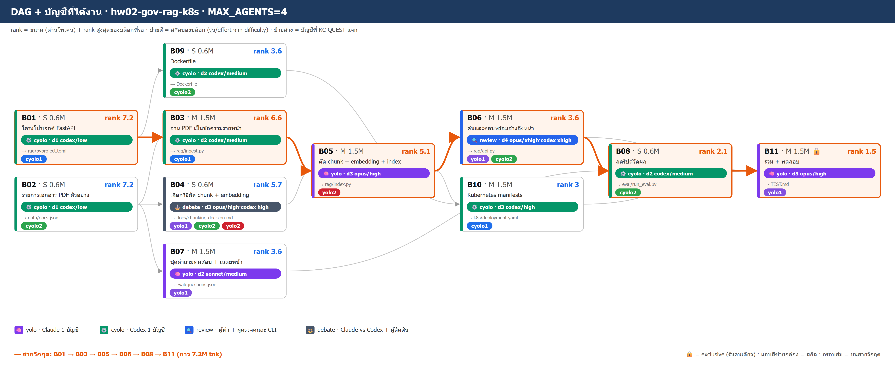
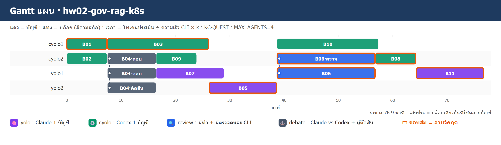
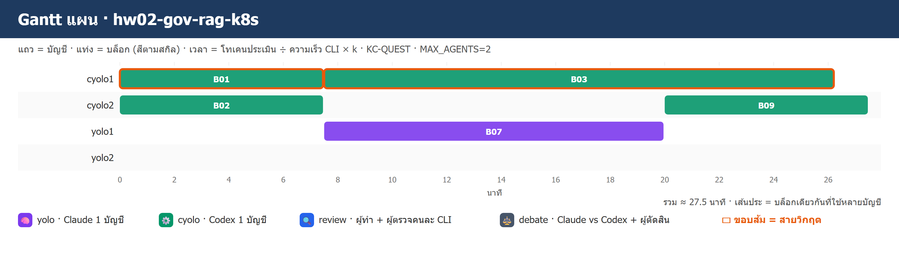

เกิดอะไรขึ้นบ้าง
ไล่ตามท่อของ RAG: รายการเอกสาร → อ่าน PDF รายหน้า → ตัด chunk + embedding → ค้นและตอบพร้อมอ้างอิงหน้า ชุดคำถามทดสอบเริ่มคู่ขนานตั้งแต่รู้ว่ามีเอกสารอะไร ส่วน Docker และ Kubernetes แยกเป็นอีกสายที่รอแค่ image กับตำแหน่งเก็บ index
- แตกโจทย์เป็น 11 บล็อก บอกสกิล ขนาด ความยาก ไฟล์ผล และเกณฑ์เสร็จ ของทุกบล็อก →
blocks.json - สั่ง
dagสกิลตรวจไฟล์บล็อก (วงวน id ซ้ำ สกิลที่ไม่รู้จัก) แล้วคิด rank และสายวิกฤต → ผ่าน ไม่มี ERROR · สายวิกฤต B01 → B03 → B05 → B06 → B08 → B11 ยาว 7.2M tok - สั่ง
plan --max-agents 4KC-QUEST แจกบล็อกให้บัญชีจากโควตาสมมติ แล้วจำลองเวลา → แจกได้ 11/11 บล็อก · ใช้ agent พร้อมกันสูงสุด 4/4 · ≈ 76.9 นาที →dag.pnggantt-plan.pngPLAN.md - สั่ง
plan --max-agents 2เป็นแผนแยกชื่อhw02-gov-rag-k8s-a2จะได้ไม่ทับไฟล์ของข้อ 3 → แจกได้ 5/11 บล็อก →evidence/PLAN-max2.md - หยุดที่แผน ไม่ได้สั่ง
exportrunreportตามที่อาจารย์กำหนด จึงไม่ใช้โทเคนของทีม
โควตาที่ใช้เป็นค่าสมมติ --accounts yolo1:80,yolo2:60,cyolo1:90,cyolo2:70 สกิลจึงไม่เรียกบัญชีจริงเลย
รันด้วย dagplan.py ตัวเดียวกับในสกิลบนเครื่อง Windows แทน docker exec เพราะตอนนั้น Docker Desktop ไม่ได้เปิดอยู่ (คำสั่งที่รันจริงอยู่ใน evidence/run.log)
บล็อกงาน
แถวสีส้มคือบล็อกบนสายวิกฤต · ขนาด S/M/L = 0.6/1.5/3 ล้านโทเคน · ความยาก 1–6 เลือกรุ่นและ effort ของโมเดล
| บล็อก | ชื่อ | สกิล | ขนาด | ยาก | ต้องรอ | rank | บัญชี (บทบาท) | นาที | ไฟล์ผล · เกณฑ์เสร็จ |
|---|---|---|---|---|---|---|---|---|---|
| B01 | โครงโปรเจกต์ FastAPI | ⚙️ cyolo | S · 0.6 | 1 | – | 7.2 | cyolo1 · ทำ | 0.0–7.5 | rag/pyproject.tomlติดตั้ง dependency ได้ และ uvicorn เปิด /health ตอบ 200 |
| B02 | รายการเอกสาร PDF ตัวอย่าง | ⚙️ cyolo | S · 0.6 | 1 | – | 7.2 | cyolo2 · ทำ | 0.0–7.5 | data/docs.jsonรายการประกาศและระเบียบ 5 ฉบับ มีชื่อ ที่มา และจำนวนหน้า ไฟล์ PDF อยู่ใน data/pdf/ |
| B03 | อ่าน PDF เป็นข้อความรายหน้า | ⚙️ cyolo | M · 1.5 | 2 | B01, B02 | 6.6 | cyolo1 · ทำ | 7.5–26.2 | rag/ingest.pyแปลง PDF ทั้ง 5 ฉบับเป็น JSONL รายหน้า เลขหน้าครบ สระและวรรณยุกต์ไทยไม่เพี้ยน |
| B04 | เลือกวิธีตัด chunk + embedding | ⚖️ debate | S · 0.6 | 3 | B02 | 5.7 | yolo1 · ตอบcyolo2 · ตอบyolo2 · ตัดสิน | 7.5–16.5 | docs/chunking-decision.mdเลือกวิธีตัด chunk และ embedding model ภาษาไทยอย่างละหนึ่ง พร้อมเหตุผล และยืนยันว่าทุก chunk เก็บเลขหน้าได้ |
| B05 | ตัด chunk + embedding + index | 🧠 yolo | M · 1.5 | 3 | B03, B04 | 5.1 | yolo2 · ทำ | 26.2–38.7 | rag/index.pyสร้าง vector index จาก JSONL ทุก chunk มี doc_id และเลขหน้า ค้นคำถามตัวอย่างแล้วได้หน้าที่เกี่ยวข้อง |
| B06 | ค้นและตอบพร้อมอ้างอิงหน้า | 🔍 review | M · 1.5 | 4 | B05 | 3.6 | yolo1 · ทำcyolo2 · ตรวจ | 38.7–56.9 | rag/api.pyPOST /ask ตอบพร้อม [ชื่อเอกสาร หน้า X] ที่มีอยู่จริงใน index ถ้าหาไม่พบให้ตอบว่าไม่พบ ไม่แต่งคำตอบ |
| B07 | ชุดคำถามทดสอบ + เฉลยหน้า | 🧠 yolo | M · 1.5 | 2 | B02 | 3.6 | yolo1 · ทำ | 16.5–29.0 | eval/questions.json30 คำถาม แต่ละข้อมีเอกสารและเลขหน้าที่ถูกต้อง ครอบคลุมทั้ง 5 ฉบับ |
| B08 | สคริปต์วัดผล | ⚙️ cyolo | S · 0.6 | 2 | B06, B07 | 2.1 | cyolo2 · ทำ | 56.9–64.4 | eval/run_eval.pyรันแล้วได้ความแม่นยำของการอ้างอิงหน้า และ recall@5 เป็นตัวเลข |
| B09 | Dockerfile | ⚙️ cyolo | S · 0.6 | 2 | B01 | 3.6 | cyolo2 · ทำ | 16.5–24.0 | Dockerfiledocker build ผ่าน และ container เปิด /health ได้ |
| B10 | Kubernetes manifests | ⚙️ cyolo | M · 1.5 | 3 | B05, B09 | 3 | cyolo1 · ทำ | 38.7–57.5 | k8s/deployment.yamlkubectl apply --dry-run=client ผ่าน มี Deployment Service PVC สำหรับ index และ probe /health |
| B11 🔒 | รวม + ทดสอบ | 🧠 yolo | M · 1.5 | 3 | B06, B08, B10 | 1.5 | yolo1 · ทำ | 64.4–76.9 | TEST.mddeploy บน kind หรือ minikube แล้วรัน eval ได้ การอ้างอิงหน้าถูกอย่างน้อย 80% บันทึกผลใน TEST.md |
DAG · rank · สายวิกฤต

rank คิดอย่างไร
rank = ขนาดของบล็อก + rank สูงสุดของบล็อกที่รอมันอยู่ คิดย้อนจากบล็อกสุดท้าย ใช้ max ไม่ใช่บวกทั้งหมด เพราะบล็อกที่รออยู่ทำพร้อมกันได้ (ตัวหนา = ตัวที่มากที่สุด)
| บล็อก | ขนาด | บล็อกที่รออยู่ | คำนวณ | rank |
|---|---|---|---|---|
| B11 | 1.5 | – | 1.5 (ไม่มีบล็อกไหนรอ) | 1.5 |
| B08 | 0.6 | B11 | 0.6 + max(B11 1.5) = 2.1 | 2.1 |
| B10 | 1.5 | B11 | 1.5 + max(B11 1.5) = 3 | 3 |
| B06 | 1.5 | B08, B11 | 1.5 + max(B08 2.1, B11 1.5) = 3.6 | 3.6 |
| B07 | 1.5 | B08 | 1.5 + max(B08 2.1) = 3.6 | 3.6 |
| B09 | 0.6 | B10 | 0.6 + max(B10 3) = 3.6 | 3.6 |
| B05 | 1.5 | B06, B10 | 1.5 + max(B06 3.6, B10 3) = 5.1 | 5.1 |
| B04 | 0.6 | B05 | 0.6 + max(B05 5.1) = 5.7 | 5.7 |
| B03 | 1.5 | B05 | 1.5 + max(B05 5.1) = 6.6 | 6.6 |
| B01 | 0.6 | B03, B09 | 0.6 + max(B03 6.6, B09 3.6) = 7.2 | 7.2 |
| B02 | 0.6 | B03, B04, B07 | 0.6 + max(B03 6.6, B04 5.7, B07 3.6) = 7.2 | 7.2 |
✔ rank ที่คิดเองตรงกับที่สกิลคำนวณทุกบล็อก
สายวิกฤต
เริ่มที่บล็อก rank สูงสุด แล้วเดินไปหาบล็อกที่รออยู่ซึ่ง rank สูงสุดทีละก้าว: B01 (7.2) → B03 (6.6) → B05 (5.1) → B06 (3.6) → B08 (2.1) → B11 (1.5)
ความยาว = 0.6 + 1.5 + 1.5 + 1.5 + 0.6 + 1.5 = 7.2M tok เท่ากับ rank ของ B01 พอดี บล็อกบนสายนี้ช้าเท่าไร ทั้งโปรเจกต์ช้าเท่านั้น จึงได้เลือกบัญชีก่อน
Gantt แผน (agent สูงสุด 4)

เริ่มงานรอบไหนบ้าง
| นาทีที่ | บล็อกที่เริ่ม |
|---|---|
| 0 | B01 → cyolo1, B02 → cyolo2 |
| 7.5 | B03 → cyolo1, B04 → yolo1+cyolo2+yolo2 |
| 16.5 | B07 → yolo1, B09 → cyolo2 |
| 26.2 | B05 → yolo2 |
| 38.7 | B10 → cyolo1, B06 → yolo1+cyolo2 |
| 56.9 | B08 → cyolo2 |
| 64.4 | B11 → yolo1 |
บล็อกที่พร้อมแล้วแต่ต้องรอ
“พร้อม” = บล็อกที่ต้องรอเสร็จครบแล้ว · ตัวเลข agent นับตอนที่บล็อกพร้อม รวมบล็อกที่ KC-QUEST เพิ่งจองในรอบเดียวกัน
| บล็อก | พร้อมเมื่อ | เริ่มจริง | รอ | สาเหตุ |
|---|---|---|---|---|
| B07 🧠 yolo | 7.5 | 16.5 | 9.0 นาที | agent ใช้อยู่ 4/4 บล็อกนี้ต้องใช้ 1 จึงไม่พอ |
| B09 ⚙️ cyolo | 7.5 | 16.5 | 9.0 นาที | agent ใช้อยู่ 4/4 บล็อกนี้ต้องใช้ 1 จึงไม่พอ |
ทำไมแผนยาว 76.9 นาที
เส้นทางที่กำหนดเวลาจบของแผน (ย้อนจากบล็อกที่จบช้าสุด ไปหาบล็อกที่ต้องรอซึ่งจบช้าสุด): B01 → B03 → B05 → B06 → B08 → B11 · ตรงกับสายวิกฤตจาก rank
| บล็อก | สกิล | ขนาด | เริ่ม–จบ | ใช้เวลา | รอก่อนเริ่ม |
|---|---|---|---|---|---|
| B01 | ⚙️ cyolo | S | 0.0–7.5 | 7.5 นาที | – |
| B03 | ⚙️ cyolo | M | 7.5–26.2 | 18.7 นาที | – |
| B05 | 🧠 yolo | M | 26.2–38.7 | 12.5 นาที | – |
| B06 | 🔍 review | M | 38.7–56.9 | 18.2 นาที | – |
| B08 | ⚙️ cyolo | S | 56.9–64.4 | 7.5 นาที | – |
| B11 | 🧠 yolo | M | 64.4–76.9 | 12.5 นาที | – |
เหตุผลตอนแตกบล็อก
จุดที่อาจารย์ให้คิด
เลือกสกิลอย่างไร
| บล็อก | สกิล | เหตุผล |
|---|---|---|
| B04 | ⚖️ debate | วิธีตัด chunk และ embedding ภาษาไทยมีผลต่อความแม่นยำของทั้งระบบ เป็นการตัดสินใจที่มีถูกผิด และเปลี่ยนทีหลังแพงเพราะต้องสร้าง index ใหม่ทั้งหมด |
| B06 | 🔍 review | หัวใจของโจทย์คืออ้างอิงหน้าให้ถูก ถ้าอ้างหน้าผิดหรือแต่งคำตอบเอง ระบบใช้งานจริงไม่ได้ จึงให้อีกฝั่งตรวจตามเกณฑ์ done |
| – | 🖼️ image | ไม่ใช้ ระบบนี้ไม่มีงานภาพ |
| – | 🏆 best_of | ไม่ใช้ ไม่มีงานสร้างสรรค์ที่ต้องการหลายตัวเลือก |
| B05 B07 B11 | 🧠 yolo | ต้องคิดหลายส่วน: index ที่ต้องเก็บเลขหน้า ชุดคำถามที่ครอบคลุมทุกเอกสาร และการรวมระบบบน Kubernetes |
| B01 B02 B03 B08 B09 B10 | ⚙️ cyolo | งานตรงไปตรงมา มีรูปแบบชัด: โครงโปรเจกต์ รายการเอกสาร อ่าน PDF สคริปต์วัดผล Dockerfile และ manifest |
ลูกศร
ลูกศรที่ตัดไม่ได้
ตั้งใจไม่ใส่ลูกศร เพื่อให้ทำพร้อมกันได้
ถ้าลด agent สูงสุดจาก 4 เหลือ 2
| บล็อก | สถานะ | เพราะอะไร |
|---|---|---|
| B04 ⚖️ debate | ไม่มีบัญชีรับ | สกิล debate ต้องใช้ 3 agent พร้อมกัน แต่เพดานคือ 2 |
| B05 🧠 yolo | ถูกบล็อก | ต้องรอ B04 ซึ่งไม่ได้ทำ |
| B06 🔍 review | ถูกบล็อก | ต้องรอ B05 ซึ่งไม่ได้ทำ |
| B08 ⚙️ cyolo | ถูกบล็อก | ต้องรอ B06 ซึ่งไม่ได้ทำ |
| B10 ⚙️ cyolo | ถูกบล็อก | ต้องรอ B05 ซึ่งไม่ได้ทำ |
| B11 🧠 yolo | ถูกบล็อก | ต้องรอ B06, B08, B10 ซึ่งไม่ได้ทำ |

บทเรียน: บล็อกที่ใช้หลายบัญชี (review 2 · debate 3 · best_of n+1) ต้องมีเพดาน agent พอ ไม่อย่างนั้นทั้งบล็อกนั้นและทุกบล็อกที่รอมันอยู่จะไม่ได้ทำเลย
ไฟล์ในโฟลเดอร์นี้
| ไฟล์ | คืออะไร | |
|---|---|---|
blocks.json | บล็อกงานที่แตกจากโจทย์ | ต้องส่ง |
dag.png | DAG + rank + สายวิกฤต + บัญชีที่ได้งาน | ต้องส่ง |
gantt-plan.png | Gantt แผน (agent สูงสุด 4) | ต้องส่ง |
PLAN.md | ตารางแผนและเหตุผลที่ KC-QUEST เลือกบัญชี | ต้องส่ง |
ANSWER.md | คำตอบ 4 ข้อ (ต้องเขียนเอง) | ต้องส่ง |
evidence/prompt.txt | พรอมต์ของข้อนี้ | หลักฐาน |
evidence/run.log | คำสั่งที่รันจริงและผลลัพธ์ทุกบรรทัด | หลักฐาน |
evidence/PLAN-max2.md | แผนเมื่อลด agent เหลือ 2 | หลักฐาน |
evidence/gantt-plan-max2.png | Gantt เมื่อลด agent เหลือ 2 | หลักฐาน |
evidence/plan.json · plan-max2.json | ข้อมูลดิบของทั้งสองแผน | หลักฐาน |


ยังต้องทำเอง: ANSWER.md
อาจารย์ให้เขียน ANSWER.md เอง ข้อละ 1–3 บรรทัด หน้านี้มีข้อมูลที่ใช้ตอบครบ:
| ข้อ | ถามอะไร | ดูที่ |
|---|---|---|
| 1 | สายวิกฤต ยาวเท่าไร คิด rank ของบล็อกแรก (B01) ด้วยมือ | DAG · rank · สายวิกฤต |
| 2 | บล็อกไหนใช้ review · debate · best_of · image เพราะอะไร | เลือกสกิลอย่างไร |
| 3 | ลูกศรที่ตัดไม่ได้ 1 เส้น และคู่ที่ตั้งใจไม่ใส่ลูกศร 1 คู่ | ลูกศร |
| 4 | ลดเหลือ 2 agent แล้วเปลี่ยนอย่างไร | ลดเหลือ 2 agent |